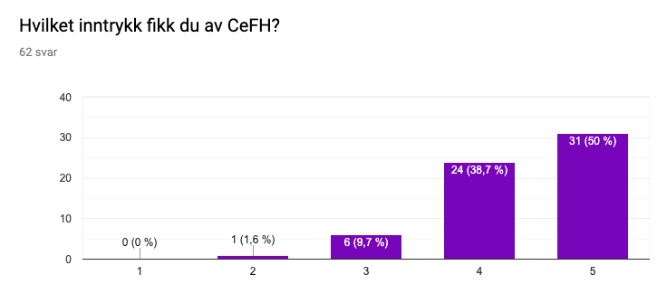
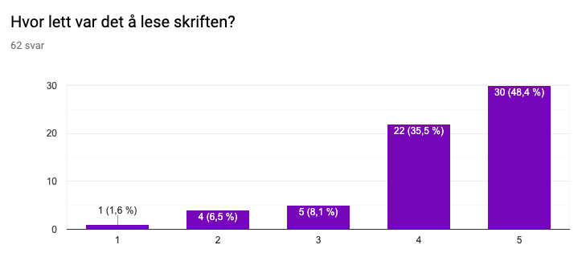
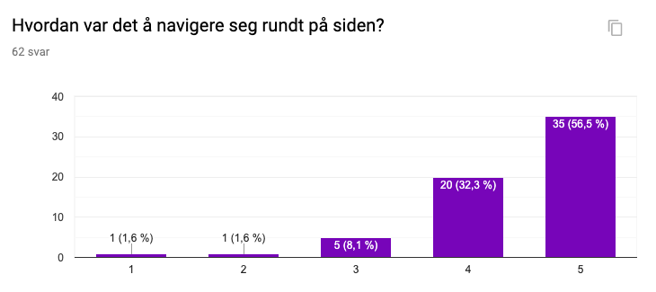

Authors: Kristin Håberg, Oda Hansen, Kari Stam Faugstad, Emil Brevik and Rikke Skindlo.
Date: 10th of November 2019
Name of client: Siri Eldevik Håberg
Position: Deputive Director, Center of Fertility and Health
A brief summary of the questionnaire you send out to testers, as well as the link to the Google Form you used. Don't forget to ask your client to test the website. - Questionare - Observation: 1) Test check boxes in Publications.
All group members posted a questionnaire on their Facebook-page for our aquaintances to answer. The questions are adressing the sites professionalism, how hard/easy it is to navigate on the page, and how it is to access information on the page. It also adressed the age of the test-subjects, which type of unit they tested the site on and which of the functions they tested.
Link to the questionnaire.A description of your efforts to reach testers that are similar to the website's intended audience and how successful you were (give the percentages of your tester audience once you aggregate their answers, e.g., 23% of college students, 46% school administrators, etc.) If you are collecting age-ranges, you can do the same. If you
A summary of the different platforms (devices and browsers) that your testers used.
On the survey, we got 62 participants. 5% of them used tablet, 39% used a PC or mac, and the remaining 56% used their mobile phone. Our clients used their computer, and other test results that we reached out to for the sake of our user-grups used their computer.A summary of the feedback you received organized by question type (design, navigation, content, usability, etc.). Highlight both positive comments and thoughtful criticism, your client's testimonial, etc.
The survey helped us address different aspects of how the site looked and worked.
Regarding the design, we asked the following questions in our survey:
- Which impression did you get from CeFH? With a ranging from 1-5, from "not profesional" to "professional"

The picture shows that 50% of the answers gave us the highest score, and no one gave us the lowest. This means that we succeeded to provide a professional website.
- How easy was it to read the text on the site?

From these results, we can see that the text is quite readable.
Both our client were quite happy with the design and how it looked with the colors. It was nice that it was obvious that it was their site, and not an under-site of NIPH, as it used to be. We got some comments about the pictures on the site, but they understood why we had them when we explained that they were placeholders.
In the observation from our clients it was obvious that all of them understood how to navigate trough the navbar, and all og them managed to easily access the information they were looking for.
Provide your response to the feedback. Concretely, describe what you could do (once the class is over) to address this feedback with changes in your design or implementation. You can also address why some of the raised issues or suggestions for improvements are difficult or impossible to tackle.
8. Step back and reflect on the whole project experience and what you learned from it. Are there general lessons that you learned, beyond the nuts-and-bolts of HTML, CSS, and JavaScript? We would like you to take this seriously and be thoughtful about your comments, but there is no right or wrong answer here, so don't feel that you have to flatter us or try to divine what we want to hear.